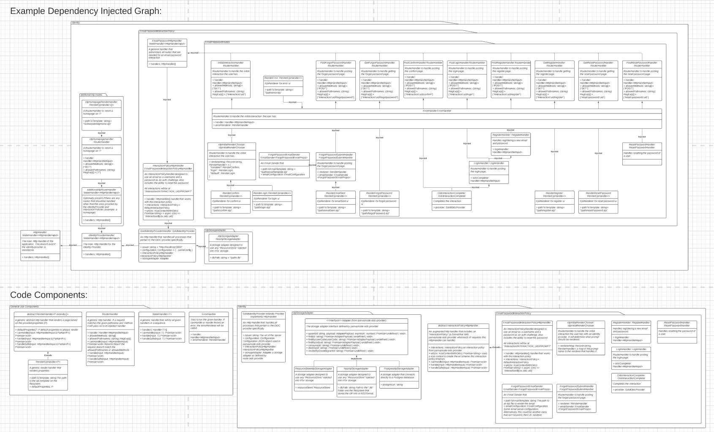
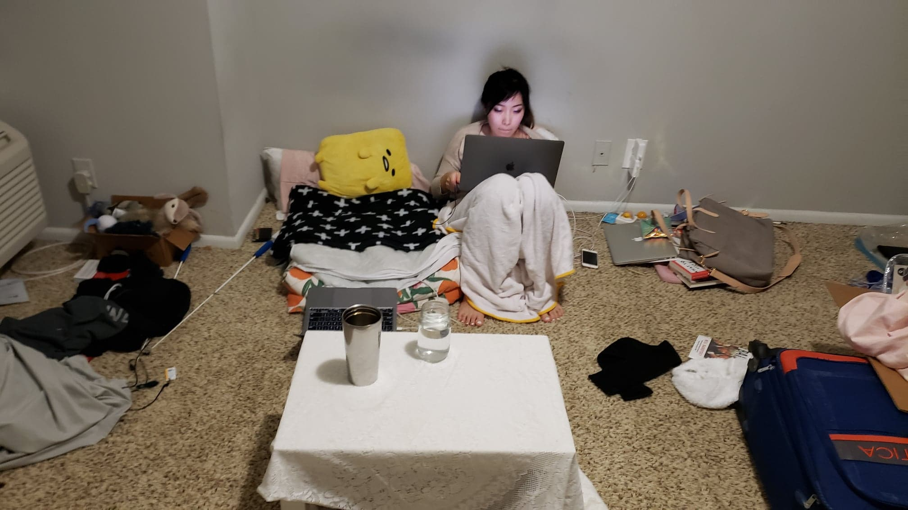

I saw a shiny Tesla today. It was the highlight of the day and probably my life. There's no reason to keep going now because I've peaked.
In all seriousness we had a pretty busy day. Of course, there was the standard morning of shower and chinese lesson (I'm more than double the number of points of the next person in my league on DuoLingo!), but then it was down to work.
I completed the architecture for the Community Solid Server Identity Provider (pictured above). For the most part, I tried to follow the wants of Ruben Verbough, but sometimes his architecture is a bit insane. He really would rather have reusable components and dependency injection handle what a few lines of code could. For example, the below lines of code translates into five separate dependency injected classes!
router.get('/', async (ctx) => {
const details = ctx.state.details
const view = (() => {
switch (details.prompt.name) {
case 'consent':
return 'confirm'
default:
return 'login'
}
})()
return ctx.render(view, {
details,
errorMessage: '',
prefilled: {}
})
})
I'll get feedback from him about the architecture on Monday. In general, he's a pretty easy guy to work with as long as you humble yourself and ask for feedback (something that one of my other co-workers clashed with him over in the past). Though, the architecture is not helping to get this IdP out quickly. If I were allowed to build this the way a standard JavaScript application is built, we'd be done by now hahaha!
Outside work (It's a Saturday I know) I met up with TJ in person for the last time before Ailin and I go to New York. We went to a Ramen place in Ponce City market a then walked on the Beltline afterwards. The weather was AMAZING! I'm kinda sad that we're leaving this warm January for the cold land of NYC. But, there's still plenty to be excited about with the move.
After hanging by Ponce City Market, TJ came back to our place and helped us move some stuff. Ailin sold most of our furniture and we moved it all out. I still can't believe that we fit the Queen mattress into the buyer's small car! (We really had to squish it in). We watched a video with TJ then said goodbye. I realize I probably should have taken a picture of the outing for the journal, but that's just something to learn for next time.
So, now we're a week away from our flight to New York, and we don't have furniture LOL. But, they do say sleeping on the floor is good for your back.
